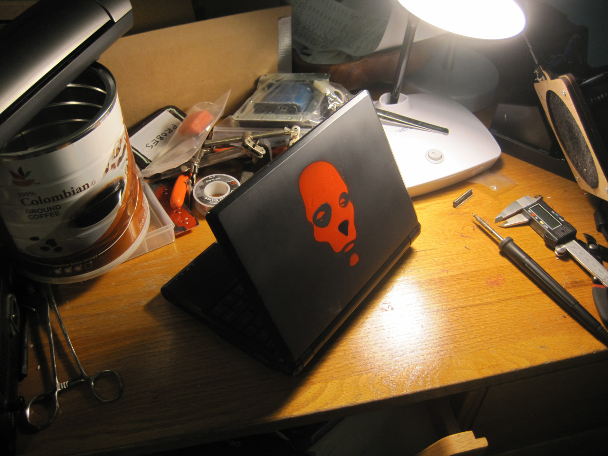
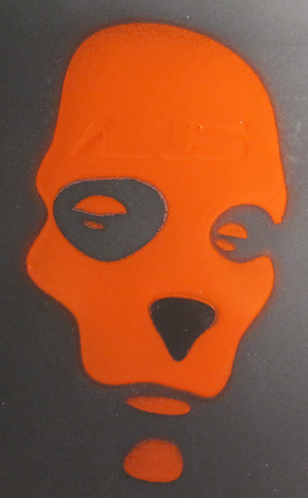

I silk-screened the face of Robert Vance from the Batman Beyond episode "Lost Soul" onto my EEE pc. In the episode the digitized mind of Vance causes chaos in various computer systems before being shut down by Batman. As a kid the story and artwork left a strong impression on me.

Done while in undergrad